Plugin Version: 3.1.1 | Release Notes
Plugin Version: 3.1.1 | Release Notes
Note: See our documentation of the latest version of this plugin in this page.
Introduction
Actions by Email is a plug-in available on the Enterprise Edition. It's an extension that allows users to derivate cases by email in a given process. Initially, this plug-in was created for users, who are not necessary system users, introduce information on a case and receiving email with forms to continue the case, but at the end this plug-in accepts system users who will receive email with information of a case.
It has two options:
- Link to fill a form: add more information on data case, and it has an option to fill a form by sending this information into the user's email. It derives the case and save case data
- Use a field to generate actions links: select a value of a specific field form an email send previously. It derivates the case and save case data
How the plug-in works
Actions by email is added as a new tab on task properties, where it can be configured depending on the user requirements. This plug-in allows sending email on this two cases:
- By sending an email to the user's mail where the information of the dynaform to be filled; this user should not necessarily be the system user.
- By sending a field or fields as a link to the user's mail.
On both cases the information will recover allowing to continue the case.
Note that this feature does no work with self service and self service value based assignment option since the actions by email feature needs the ID of the next user in order to properly send the notifications.
Note: The email sent by Actions by Email is resent when the case is unpaused, reassigned or uncancelled.
Requirements
- Processmaker V 2.0.37 and later.
- Configure Email Notifications.
Browser Compatibility
- Mozilla Firefox from 3.6 and later.
- Internet Explorer from 7 and later.
- Chrome
Installation and Configuration
Install the plug-in in ProcessMaker
The plug-in will be available once imported the Enterprise plug-in with the corresponding license, it's necessary activate it once it's installed, it doesn't need additional configuration on the server side.
Note: In ProcessMaker 3, the feature must be enabled to work with it inside the processes. This is also a requirement even if the Actions by Email plugin is used (to work with old processes).
Configuring Actions By Email Properties
Once the plug-in is enabled, you need to define the Actions by Email on the task where a case is derivated, so right click on Task Properties of that task and a new tab will display where it is possible to configure all the options for this plug-in:
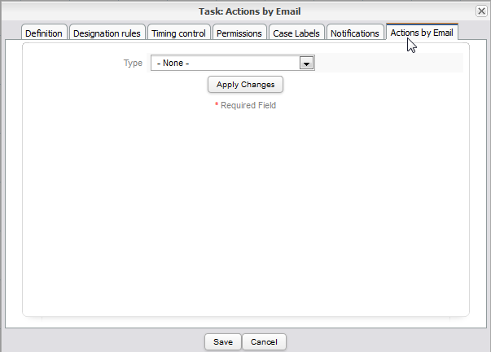
Fill the ActionByEmail tab with the following considerations:
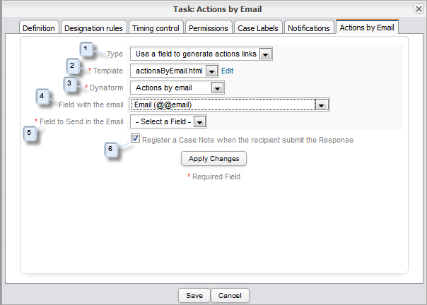
- Type: a dropdown field where the type of sending data must be selected:
- Link to fill a form: the form will be send into the email to be filled out.
- Use a field to generate actions links: generates a select link according to the field chosen.
Note: the plug-in will select by default the email of the user registered in ProcessMaker, who will be assigned into the task where the plug-in was configured. If there is no email defined when the user was registered in ProcessMaker, the email that takes will be the one that is selected as variable on the option Link to fill a form.
- Template: select the email template to be send. Including into the plug-in, a template, actionsByEmail.html, is created by default to do some tests. Also it has the possibility to edit the template by clicking on the link Edit.
- DynaForm: select one of the DynaForms created for the current process.
Note: There's no restriction on using any DynaForm of the process, it will depend on how was the process designed.
- Field with the email: there are two types to send emails:
- Choosing a variable: all of the DynaForm variables will list on the dropdown, choose the one that has the email field where mails will send.
- Send the email to the user assigned to the task: choose the email of the user who is assigned into the current task.
- Field to Send in the Email: this will enable where the option Use a field to generate actions link is selected, enable this option is possible o choose fields that will be sent on the email. It only works for the following fields: yesno, dropdown, radiogroup and checkbox.
- Register a Case Note when the recipient submit the Response: If this option is checked, a case note is added when the DynaForm is submitted.
Finally, click on Apply Changes to save or modify the configuration.
Example
Creating an Example Process
Note: this is only a basic Process to show how to apply this plug-in in a process
Choosing Link to fill a form option
It will be listed step by step how to configure this plug-in and how it works in a process:
-
Create a simple process
The example process has two tasks, as the image below
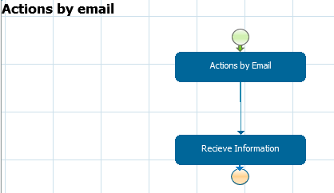
Note: This plug-in doesn't work with Routing Rules Selection (where the assigned user can select the next task manually).
-
Create a DynaForm.
Create an example DynaForm which will have basic fields as the image below, and assign this DynaForm in the first task.
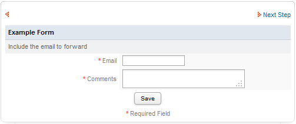
-
Configuring the plug-in
Configure the plug-in, and select the DynaForm created before.
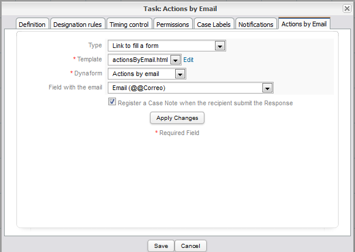
-
Running a Case
For example, if the Actions by Email was configured on the Second Task, the e-mail will be sent when this first task has been routed into the second which will be sent into the user's account. Fill The DynaForm:

Derivate the current task, and an e-mail will be sent:
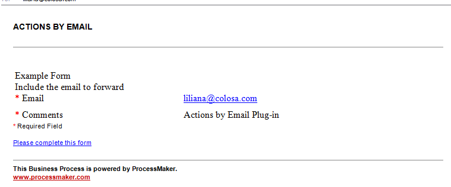
Click on Please fill this form, this link will redirect to the DynaForm to be edited:
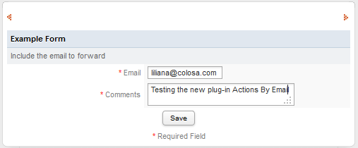
By clicking on Save the following message will display:
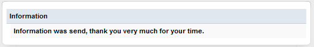
If the option "Register a Case Note" was checked another email will send into the user's account:
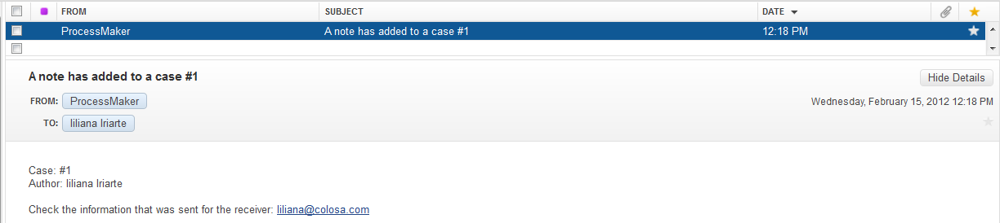
Finally, Checking the Case Note added into the case:
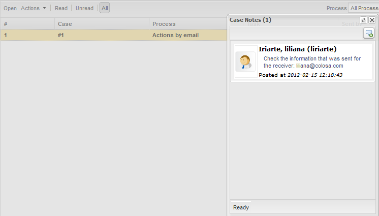
Note: Remember that checking the option Register a Case Notes is optional.
Choosing Use a field to generate actions links
-
Create a new DynaForm: Create a new DynaForm with two new fields Name and Last Name, copying the three fields added in the previous DynaForm, add a dropdown field named Select a Country,
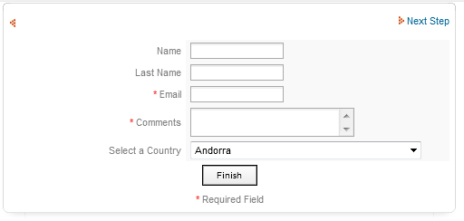
And assign it in the Second task.
-
Configure the plug-in: in the configuration the dropdown field will appear: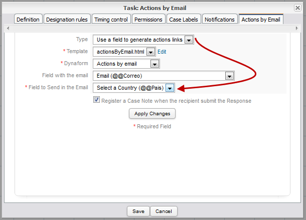
-
Running a Case: Running the case and depending on which task the plug-in is configured, the mail send will be as follows:
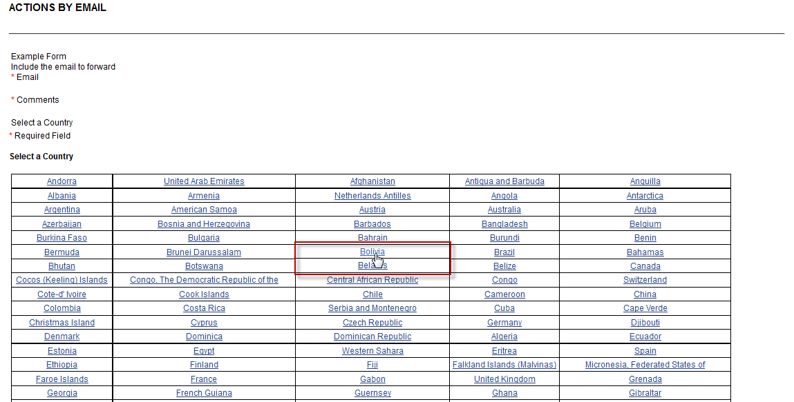
By choosing any Country, in our example Bolivia this information will be send into next form. Continuing the case and opening the second task the DynaForm will display with the following information:

As it can be seen, the country Bolivia is displayed on the dropdown as it was selected on the email.
Note: From Version 2.0.9 the plug-in , a new improvement was added when the email is sent; now the field name of the dropdown will appear just once, below the options listed on the dropdown, as the image below:

-
Register a Case Note: If this option was checked, when the configuration of the plug-in was done, another email will send into the user's account when user clicks on any linking field of the DynaForm. A confirmation message will display as the image below:

If you try to resend the same email, another message will display as the image below:
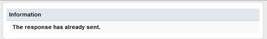
Checking the email for the Information send:
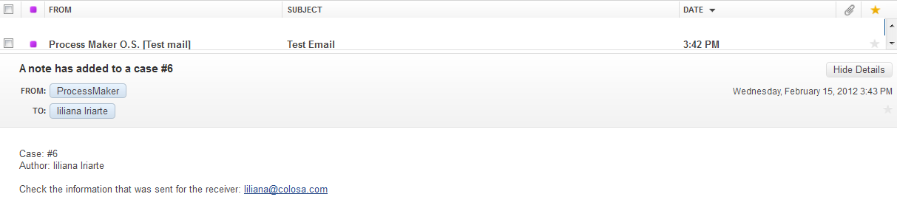
Finally checking the information added on the Case Note of the respective Case

Note: Remember that the Case Notes is optional.
Actions by Email Log
When a case is executed, previous configuration of Actions By Email options, all messages sent will register into the Actions by Email Log. This is very useful to have a register of which messages were send or which weren't. Login to ProcessMaker with a user such as the "admin", who has the PM_USERS permission in his/her role. Then, go to ADMIN > Plugins and click on Actions by Email option:
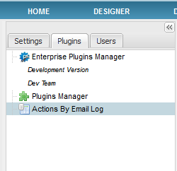
A list with emails sent will display as follows:
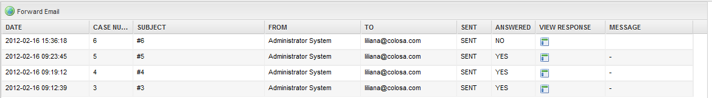
Where:
- Forward email: by choosing an email from the list and clicking on this option the email will be resend. If the task is closed the following message will display:
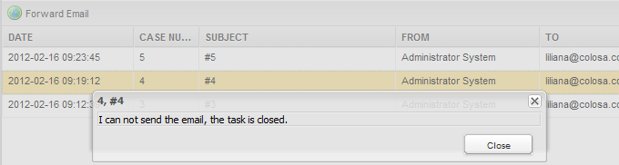
- Date: it's the date on which the email was sent.
- Case Number: it's the case number in which the message was sent.
- Subject: it will display the subject of the email.
- From: email address from which the email was sent.
- To: user who receives the email.
- Sent: state of the email. If it was sent state will be SENT on the contrary it will display an ERROR status.
- Answered: if the message is answered, in other words, whether the form is filled or clicked on the link options, on this row the message will be YES on the contrary, if the email is not answered, the message will be NO.
- View Response: by clicking on the icon, the email answered will open in a new window, with the fields which were filled during the process. This have a relation with the field Answered if in that field the Answer is YES, the window will display the message that will be the form filled or the link option.
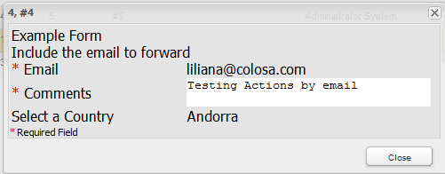
However, if the answer on the Answered field is NO, the window will display the following message:
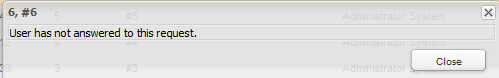
- Message: if any error occurs while it is sending a message, this error will display on this row.